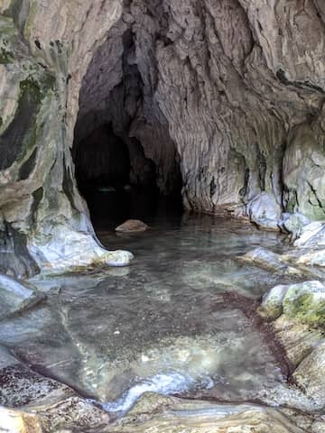
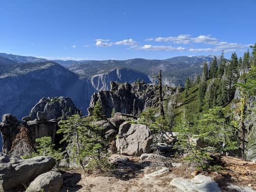
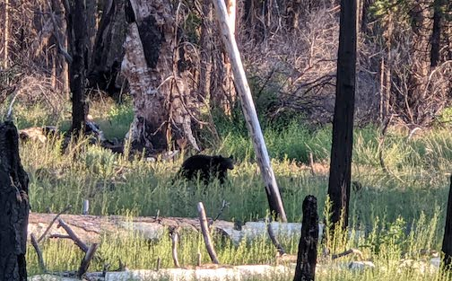

..
Roadtrip to Emigrant Wilderness Yosemite
June 24 - Jul 3.
Our hike at Emigrant Wilderness was one of the best hike I’ve ever done. The scenery is amazing, we didn’t see anyone else on the trail, there was thunder and lightning, then it started raining, then hail, and I remembered laughing as I tried to catch the hailstones with my hands. It was surreal.
Swimming through the dark caverns at Natural Bridges was another very memorable experience.
I had my first bear sighting at Yosemite. That was so cool.
 Our hike at Emigrant Wilderness, about 20 minutes before the thunderstorms and hail
Our hike at Emigrant Wilderness, about 20 minutes before the thunderstorms and hail
 Loved swimming through the caverns
 Yosemite West
 My first bear sighting